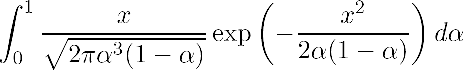

Important
- If you have trouble with Coursecompass or MyMathLab (i.e. for all
technical issues):
Please email the course administrator Henrik Bäärnhielm
- If you have trouble with Calculus I material (i.e. for all mathematical
issues):
Please talk to the lecturer Thomas Prellberg
News
- The 2008 exam paper is now available to prepare
for the late summer exams. Comparing all four exam papers will give you a good idea about the type of questions asked and the variability of
the exam. If you worry about passing, it might be advisable to focus on the material in Question 1 and revise curve sketching.
- The 2007/8 Calculus II webpage is here
- Midterm and End-of-Term test statistics
- Prize Question: The winner is Douglas Mills - Congratulations!
Evaluate  . Solution
- Remote Desktop Access is working, and the college network
computers support it.
Lecture times
- Tuesday 9-10, Friday 1-2 and 4-5
(all lectures in Mason Lecture Theatre)
Office hours
- Tuesday 10:30-11:30, Friday 2:30-3:30
(Maths 113)
Coursework
- Coursework will be done online,
please register with your access code for course id "prellberg97476"
- For details of using MyMathLab on the college network (and
elsewhere), see the following guide
- The deadline for coursework is
every Thursday midnight, and electronically enforced!
Exercise classes (starting Wednesday,
October 3)
- The exercise class allocation is available here,
instructions see here.
- Wednesday 10-11: Queens EB2 (Lidsey/Rudd), Queens FB1
(Carr/Kusuma), Maths 103 (Murray/Kazanidis), CS446
(Cresswell/Camporeale), PUG1 (Verner/Islam)
- Wednesday 11-12: PP2 (Carr/Rudd), Eng 216 (Camporeale/Kusuma),
PUG1 (Lidsey/Islam), MAS103 (Murray/Kazanidis)
- Problem sheet 1 (for exercise
class on October 3), sample
solution
- Problem sheet 2 (for exercise
class on October 10), sample
solution
- Problem sheet 3 (for exercise
class on October 17), sample
solution
- Problem sheet 4 (for exercise
class on October 24), sample
solution
- Problem sheet 5 (for exercise
class on October 31), sample
solution
- Problem sheet 6 (for exercise
class on November 14), sample
solution
- Problem sheet 7 (for exercise
class on November 21), sample
solution
- Problem sheet 8 (for exercise
class on November 28), sample
solution
- Problem sheet 9 (for exercise
class on December 5), sample
solution
- Problem sheet 10 (for exercise
class on December 12), sample
solution
Course Administrator
Course description
Course information
Book
- Thomas' Calculus (11th
international edition, media upgrade), Pearson Education, 2008,
supplemented by
MyMathLab
- Book and access code are mandatory and will be sold as a package
for £30.00 at the start of term
Supplementary material (password protected, userid/password
available on coursecompass)
Tests
- There will be two tests (in Week 7 and Week 12).
Exam
- A sample exam paper is available here,
and the official exams from last year are here
and here.
- Previous Calculus I and II Exams (for MAS101 and MAS102) can be
found here
Calculus II material
- Webpage for 2006/7 Calculus II
(maintained by Professor Bernard Carr)
Thomas
Prellberg
September 2007